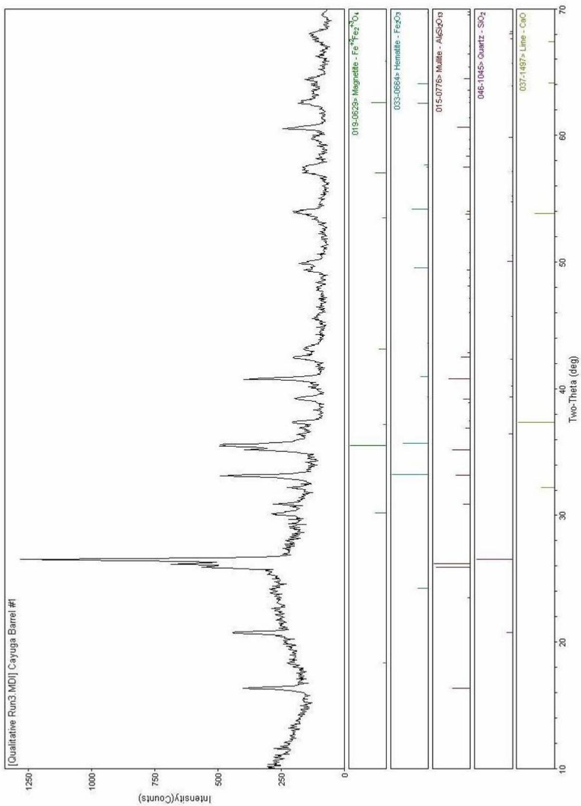
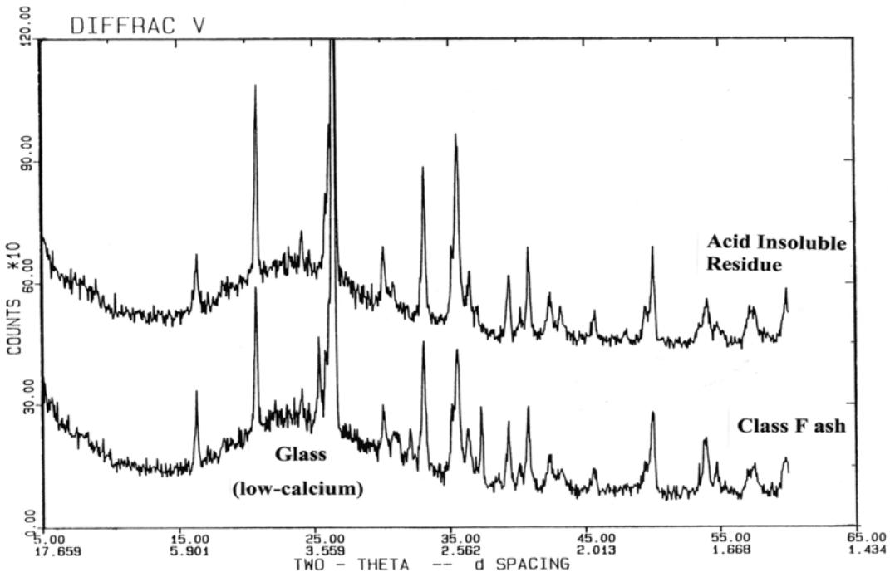
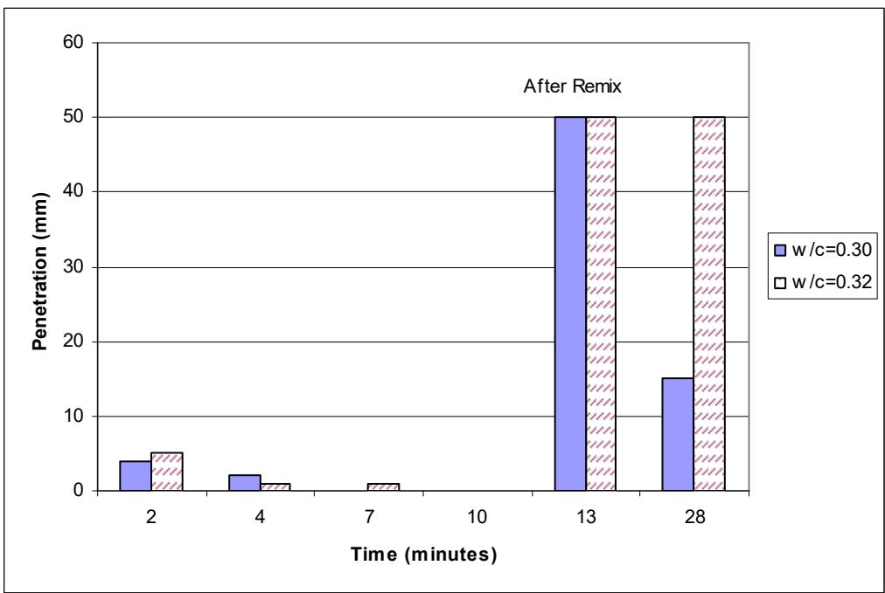
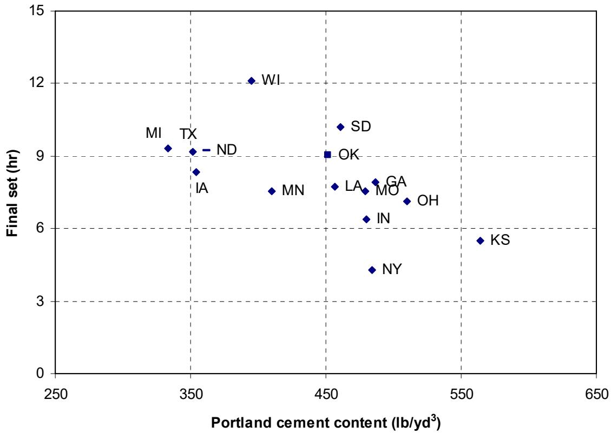
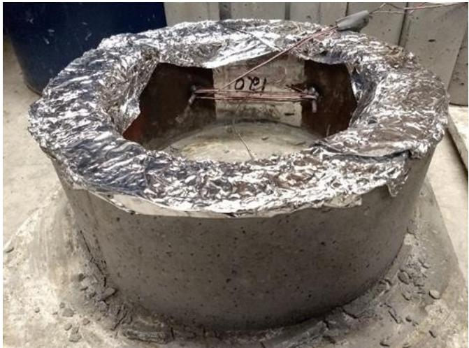
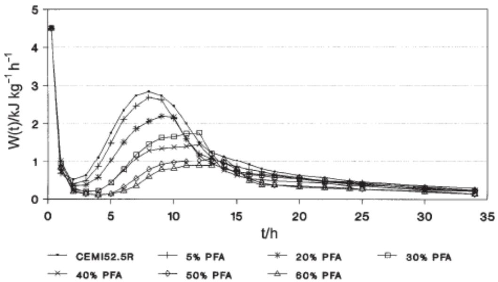
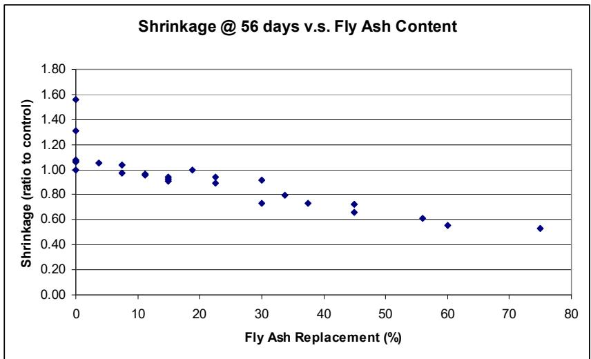
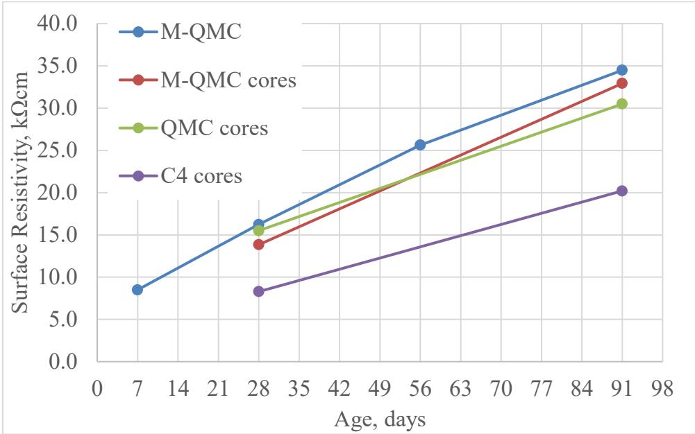
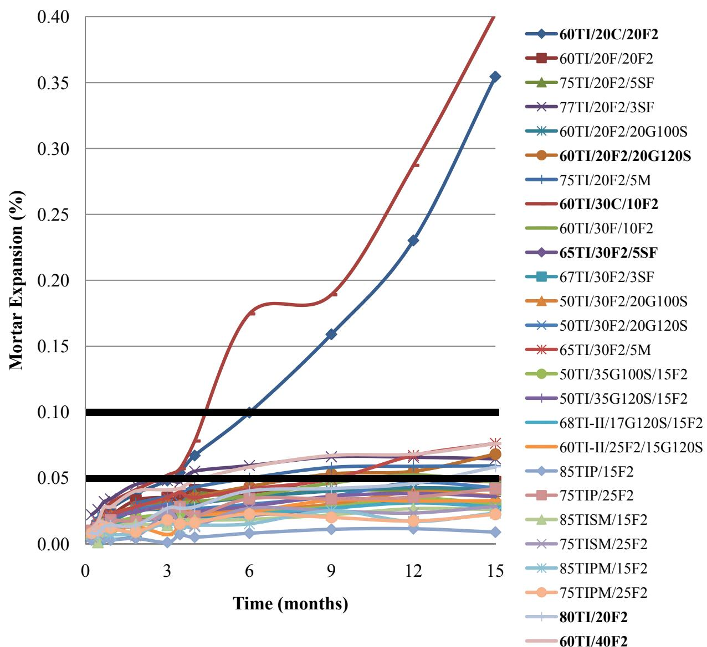
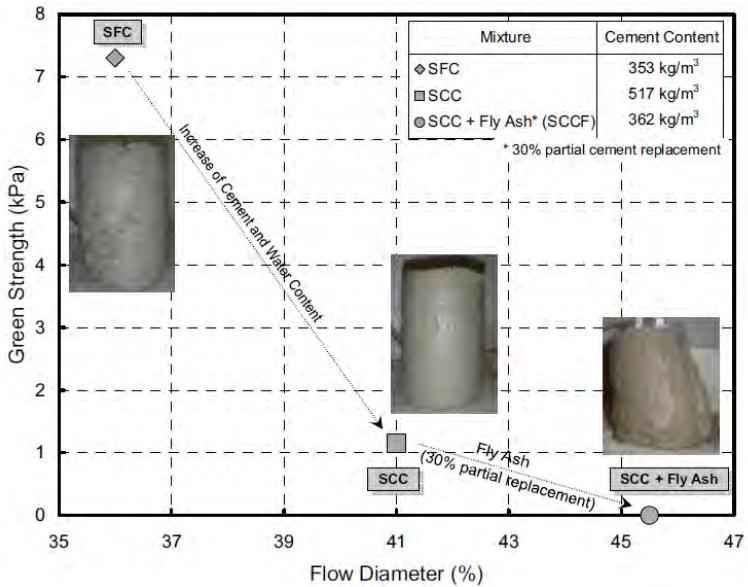

Fly Ash
Fly ash is a supplementary cementitious material (SCM) classified as such because its predominant alumino-silicate glass components are essentially inert in water alone and require calcium hydroxide to react [2]. This reaction with calcium hydroxide, which is released during Portland cement hydration, produces compounds that possess cementitious value [2], defining the functional role of fly ash within concrete mixtures. Fine spherical particles captured from coal combustion flue gases—formed when pulverized coal is blown into a boiler’s burning zone, where noncombustible inorganic materials melt and fuse together before cooling into glassy spheres collected by precipitators [2]—fly ash is the most commonly used SCM. In 2001, the US produced ~68 million tons of fly ash; ~30% was utilized. [1] The replacement of portland cement with fly ash reduces the carbon footprint of concrete mixtures by lowering CO2 emissions associated with cement production during construction. [3] Additionally, fly ash contributes to smoother pavement surfaces when used in conjunction with optimized aggregate gradations, which subsequently reduces vehicle fuel consumption over the structure’s service life. [3]
Sources (37)
Overview and Historical Context
Class F fly ash was the only class from 1930s–1960s research. Class C emerged in the 1970s with western coal development. Users discovered Class C did not provide the same benefits as Class F for sulfate resistance and ASR mitigation, leading to specification improvements by the mid-1990s. [1]
Classification (ASTM C 618 & CSA)
According to ASTM C 618, fly ash is categorized into two classes based on its SiO₂+Al₂O₃+Fe₂O₃ content: Class F, which contains ≥70% and is typically pozzolanic though may occasionally exhibit self-cementitious properties, and Class C, which contains 50%–70%, possesses a more complex mineralogy, and may exhibit self-cementitious properties. Class F fly ash is generally produced from burning bituminous and anthracite coals, whereas Class C fly ash is typically derived from low sulfur subbituminous and lignite coals [4]. Additionally, CSA specifications add three types based on CaO content: Type F (<8% CaO), Type CI (8%–20% CaO), and Type CH (>20% CaO), with the latter having properties more akin to cementitious materials.

XRD results for Cayuga Class F fly ash [4]CSA specifications categorize fly ash into three types based on bulk calcium oxide content: Type F contains less than 8%, Type CI ranges from 8% to 20%, and Type CH exceeds 20% CaO [1].
Mineralogy and Chemical Composition
Fly ash is predominately glass, with its color ranging from tan to gray depending on its source coal and chemical composition [4]. The pozzolanic reactivity of fly ash is influenced by its fineness, silica and alumina content, moisture, free lime, density, carbon amount, temperature, and age [4]. Because it is a non-manufactured product with variable chemistry, X-ray fluorescence analysis reveals that fly ash exhibits significantly larger standard deviations in elemental composition compared to portland cement [5]. Furthermore, petrographic analysis can reveal discrepancies between mixture design and actual composition, such as the absence of expected Class C fly ash in cores where 15% replacement was specified [6].
The specific chemistry of fly ash varies by class; Class F ash contains low-calcium silicate glass with few crystalline minerals, specifically alpha-quartz, mullite, a ferrite spinel, and potentially small amounts of anhydrite and free lime [1] [1]. In contrast, Class C fly ash contains calcium-alumino-silicate glasses that react with water alone, allowing it to exhibit both pozzolanic and cementitious properties unlike the strictly pozzolanic Class F [2]. The chemistry of Class C ash is much more complex, containing both a high-calcium glass (cementitious) and a pozzolanic glass similar to Class F, plus a wide variety of rapidly hydrating minerals [1]. For example, the chemical composition of Class C fly ash used in Iowa pavement overlays includes approximately 30% calcium oxide and 15% sulfur trioxide, distinguishing it from lower-calcium alternatives [7].
 X-ray diffractograms of Class C fly ash and the acid-insoluble residue from the fly ash (note the change in the glass type; the acid-insoluble portion of the fly ash is the pozzolanic fraction of the ash) [1]
X-ray diffractograms of Class C fly ash and the acid-insoluble residue from the fly ash (note the change in the glass type; the acid-insoluble portion of the fly ash is the pozzolanic fraction of the ash) [1]
Specific SCM properties and blends significantly influence performance; for instance, Class F fly ash typically contains less than 15% of its glass phase soluble in hydrochloric acid, whereas Class C fly ash is approximately 70% soluble due to the presence of a high-calcium glass phase and rapidly hydrating minerals [1].

X-ray diffractograms of Class F fly ash and the acid-insoluble residue from the fly ash (note the similarity between the two diffraction patterns) [1]Physical Properties and Fineness
Fly ash can exhibit a higher Blaine fineness than portland cement, with specific values reaching approximately 5,337 cm²/g compared to 3,774 cm²/g for the cement [8]. Additionally, fly ash possesses a lower specific gravity (2.28) than portland cement (3.15), meaning an equal weight replacement provides greater paste volume to fill voids between coarse aggregates, thereby improving workability in pervious concrete mixtures [9].
Regarding air void characteristics, the addition of fly ash decreases the air-void spacing factor while simultaneously increasing the quantity of small-size air voids and decreasing large air voids [10]. This refinement occurs regardless of whether a one-step or two-step mixing procedure is used, though two-step mixing further increases the proportion of small voids [10]. While fly ash addition has no significant effect on total air content, it actively reduces the spacing factor when used in conjunction with water reducers, a reduction observed across different mixing methods where two-step mixing produces a lower spacing factor than one-step mixing [10]. Consequently, the average spacing factor for entrained air in fly ash concrete is approximately 0.0092 inches, which falls within the suggested minimum and maximum limits of 0.0040 to 0.015 inches [5].
 Statistical analysis—effects of ambient temperature, concrete w/cm, and vibrator energy effect [10]
Statistical analysis—effects of ambient temperature, concrete w/cm, and vibrator energy effect [10]
The chemical and physical properties of cementitious materials vary significantly depending on their composition; for instance, the Blaine fineness of fly ash can exceed that of portland cement, with reported values reaching 5,337 cm²/g compared to 3,774 cm²/g for the cement [8].
Effects on Concrete Workability and Rheology
Spherical particles function as lubricant/dispersant to reduce water demand, and by releasing entrapped water between OPC particles, they improve workability. Consequently, fly ash can behave like a low-range water reducer, allowing mixtures to maintain better workability and alleviate premature stiffening (false set) tendencies compared to plain portland cement [11]. This addition improves concrete workability and durability while allowing for specific water reducer dosages that produce average w/cm ratios between 0.40 and 0.49 in field applications [12]. Specifically, fly ash substitution can reduce concrete water demand by approximately 3% for every 10% replacement of portland cement [2]. However, the addition of fine fly ash particles and their consumption of water during pozzolanic reactions reduces the bleeding rate of freshly poured concrete, which can accelerate negative capillary pressure development and lead to plastic shrinkage cracking [2].

Illustration of severe false set in a portland cement sample [11]Regarding air content, fly ash addition can result in an air loss through the paver as low as 0.1 percent, indicating that the mixture is not over-vibrated during placement [5]. Air entrainment stability varies by fly ash type; Class C fly ash mixtures maintain consistent air content (7–8.2% via pressure method) using a single admixture dosage, whereas blended cement containing Class F fly ash requires increased admixture dosages as the water-to-binder ratio decreases [13]. Furthermore, high-shear mixing of fly ash pastes significantly reduces rheological shear stress compared to conventional low-shear methods, and continued mixing further delays set time by inhibiting bond formation without stopping hydration. This increased structural breakdown of cement agglomerations allows for more uniform slurry and higher early-age strengths [14]. The addition of fly ash to cement pastes causes a greater decrease in rheological shear stress than ground granulated blast-furnace slag (GGBFS), and increasing mixing energy generally increases slump for mixtures where fly ash is the sole supplementary cementitious material; however, high-shear mixing can reduce the overall degree of hydration by approximately 12 percent when replacing 15 percent of portland cement with fly ash [14].

Final Set versus Portland Cement Content [5]Hydration, Heat, and Setting Times
The use of fly ash in PCC pavement mix design is recommended to minimize warping by reducing the heat released during cement hydration and lowering the concrete mix temperature below allowable maximums specified during construction [12]. By reducing the amounts of cementitious materials and their paste products, which are directly related to the hydration process and shrinkage, fly ash mitigates curling and warping [12]. However, fly ash concrete exhibits a slower rate of strength development compared to plain portland cement, creating a trade-off between delayed early-age strength and higher ultimate strength [2]. This slower hydration rate increases set time due to reduced water and a slower pozzolanic reaction, and fly ash concrete mixtures with high replacement levels may require delayed joint sawing, particularly when placed in cooler ambient conditions [15]. Furthermore, adding fly ash replacement increases the activation energy of cementitious materials as calculated by the Arrhenius equation [16]. Increasing testing temperature reduces the variation in thermal set time, suggesting that winter construction is more prone to set time and strength development issues than summer construction [16].

Concrete ring undergoing restrained shrinkage [2]The thermal properties of fly ash are complex; while it reduces maximum hydration temperature and lowers thermal cracking risk, the total heat of hydration is directly proportional to its calcium oxide content, with Schindler recommending a calculation of 1,800 times the percent of CaO [17]. High-calcium Class C fly ash can react very rapidly with water, releasing excessive heat similar to normal OPC hydration [17]. Increasing the fly ash ratio widens the peak of hydration generation while simultaneously decreasing the maximum heat generation rate [17]. Simple isothermal calorimetry can detect a distinct second heat evolution peak associated with fly ash hydration, which is typically not observed in AdiaCal or IQ Drum tests [16]. Calorimetry-based heat indexes can identify material incompatibilities by detecting early sharp exothermic events; for instance, adding a water reducer to a mixture with Class C fly ash was shown to decrease initial set time from 6.2 to 2.6 hours while drastically reducing the area under the second hydration peak [18]. When fly ash replacement levels are varied by ±50% from the design dosage, heat-generation curves remain similar but shift left or right without indicating material incompatibility [16].
 Calorimetry results for the incompatible materials [18]
Calorimetry results for the incompatible materials [18]
Chemical composition can also significantly impact setting behavior. Class C fly ash can significantly delay mortar setting times due to high sulfur oxide content, increasing final set by up to 623 minutes when combined with Class F fly ash in ternary mixtures; this retardation is attributed to oversulfonation and the limited early-age cementitious properties of fly ash reducing hydration product formation [19]. Specifically, binary mixtures with Type I cement and Class C fly ash show increased setting times due to high sulfur oxide content (2.70%), resulting in a sulfate-to-cement ratio of 3.31% that causes oversulfonation and delayed stiffening [19].
Low-calcium fly ash reduces the total heat of hydration, whereas high-calcium Class C fly ash can react rapidly with water to release excessive heat comparable to normal OPC; the total heat generated by fly ash is generally proportional to its CaO content, estimated at 1,800 times the percent of CaO [17].

b. Effect of class C fly ash on heat generation (adapted from Nocuñ-Wczelik 2001) [17]High sulfur oxide content (e.g., 2.70% in Class C fly ash versus 0.68% in Class F) leads to oversulfonated mixtures that significantly delay setting times, with final set delays reaching up to 402 minutes when blended with Class F fly ash [19].
Mechanical Strength and Durability
The upper limit for Class C fly ash replacement in concrete is constrained by its limited ability to mitigate alkali-silica reaction expansion and its lack of enhancement for sulfate resistance compared to Class F [1]. While Class F fly ash significantly reduces early compressive strength gain, typically measured at less than 28 days, it simultaneously enhances both sulfate resistance and alkali-silica reaction resistance [1]. In contrast, Class C has little effect on early strength but offers limited sulfate/ASR benefit; indeed, the 2011 concrete phase confirmed that Class C fly ash has limited ASR mitigation capability, having failed Caltrans Section 90 consistently, and is detrimental to sulfate resistance, as 7 of 22 mixtures with Class C fractured by 15 months. Furthermore, Class F fly ash may improve the durability of concrete containing slag coarse aggregates, whereas Class C fly ash has been observed to have a negative impact on such mixtures [5]. However, field observations indicate that concrete containing 15% Class C fly ash blended with Type IS cement can exhibit excellent durability with no evidence of surface scaling on pavements placed in summer or autumn conditions [6].
Fly ash consistently lowers the drying shrinkage of cementitious systems across various binary and ternary blends [11], and using less portland cement and more fly ash reduces the potential for shrinkage, which corresponds to lower degrees of curling and warping in jointed plain concrete pavements [12]. In ternary concrete mixes containing 20% slag and 20% fly ash, early entry sawing joints may fail to crack for extended periods, with some pavements showing only one joint crack per twenty joints nine months after construction [20]; this delayed cracking may be attributed to reduced drying shrinkage or insufficient cut depth, sometimes necessitating contractors to repeat sawing weeks after initial construction [20]. Regarding thermal properties, fly ash concrete mixtures can achieve a coefficient of thermal expansion (CTE) as low as 1.044 × 10⁻⁵ ε/°C when measured at 56 days [8], and the CTE for field-fabricated cylinders containing Class C fly ash has been measured at specific values such as 5.35×10⁻⁶ ε/°F [21]. Additionally, high-strength pavement mix designs utilizing 15% fly ash replacement at a 0.42 w/cm ratio exhibit higher average degrees of curling and warping compared to low-strength mixes with identical flyash content but a higher 0.53 w/cm ratio [22].

Influence of fly ash replacement on the relative shrinkage of mortar bars [11]In highly reactive aggregate environments, such as those containing chert, Class F fly ash may require high replacement volumes or must be combined with other SCMs like silica fume to effectively mitigate alkali-silica reaction (ASR) expansion, as a 15% to 20% replacement of fly ash was found insufficient to prevent ASR gel formation in cores containing reactive fine chert aggregate [23]. The critical paste volume required to achieve maximum strength varies by binder type, with plain portland cement and Class C fly ash mixtures requiring approximately 500 pounds per cubic yard (pcy), whereas slag and Class F fly ash mixtures require about 600 pcy [24]. Consequently, the peak paste-to-void ratio (Vp/Vvoid) for strength development reaches approximately 150 percent for plain portland cement and Class C fly ash mixtures, but increases to about 175 percent for slag and Class F fly ash mixtures [24]. While compressive strength efficiency per pound of cementitious material peaks at similar binder contents across systems, plain portland cement and Class C fly ash mixtures exhibit higher peak efficiencies than Class F fly ash and slag mixtures [24].
 Compressive strengths for different binder systems at 28 days as a function of Vp/Vvoid [24]
Compressive strengths for different binder systems at 28 days as a function of Vp/Vvoid [24]
Permeability and Resistance to Chemical Attack
The addition of fly ash increases penetration values in modified ASTM C 359 tests, with many samples exceeding 250 mm when the gypsum/bassanite ratio is greater than 1, indicating a significant improvement in plastic properties [11]. While Class F fly ash does not show marked reductions in penetrability at 28 days compared to slag or Class C fly ash, this reduction becomes apparent at 90 days, aligning with its slower pozzolanic reaction rate [24]. Furthermore, the pozzolanic reaction of fly ash refines the pore structure of concrete, which increases the water contact angle and enhances hydrophobicity compared to plain portland cement pastes [25]. In concrete exposed to deicing salts, the presence of unhydrated fly ash particles with clean surfaces indicates limited intrusion of calcium chloride into the paste matrix [25]. High-volume fly ash concrete can achieve low chloride ion penetrability classifications, with surface resistivity values reaching approximately 26.8 kohm-cm at 56 days for cast samples and demonstrating continued improvement over time [15]. The charge passed in rapid chloride permeability tests decreases significantly as curing age increases due to the higher degree of hydration [26], and the use of Micro Air® admixture instead of Vinsol resin reduces the charge passed in chloride permeability tests even when air contents are higher [26]. Additionally, the presence of fly ash influences the chloride binding capacity over time, represented by the ‘m’ term in diffusion models; higher fly ash content correlates with a lower diffusivity of concrete over extended service periods [27].

Averaged surface resistivity results of three mixes [15]Regarding durability, the chloride permeability threshold for freeze-thaw durability is stricter for Class C fly ash concrete (≤185 Coulombs) than for blended cement containing Class F fly ash (≤608 Coulombs), indicating that lower permeability alone does not guarantee durability without air entrainment [13]. Fly ash concrete exhibits a more rapid increase in chloride permeability when the water-to-binder ratio exceeds 0.35, highlighting a critical threshold for durability performance in non-air-entrained systems [13]. The relationship between porosity and freeze-thaw durability is less defined for air-entrained fly ash concrete because the air void system accommodates freezing water expansion, allowing high-porosity samples to still achieve high durability factors [13]. In freeze-thaw testing of concrete containing Class C fly ash, wet-cured specimens exposed to salt solutions exhibit significantly greater distress than those coated with curing compounds prior to drying, as the air-dried surface absorbs more deicing solution during exposure; this indicates that curing method and subsequent moisture conditioning critically influence the durability performance of fly ash concretes in saline freeze-thaw environments [28]. Petrographic analysis of field cores containing fly ash reveals that secondary ettringite can infill finer-sized entrained air voids adjacent to joint cracks, reducing the volume of entrained-sized void space and increasing the spacing factor beyond acceptable limits for freeze-thaw resistance, a mechanism that compromises durability even when the original concrete mix was properly designed with adequate air entrainment [28]. The infilling of air voids by secondary ettringite in fly ash concrete occurs during saturation with deicer solutions and does not require prior distress, suggesting that sulfate availability from soils or materials can fuel this reaction, while poor joint drainage exacerbates the issue by allowing constant supply of deicer-laden solutions, leading to progressive distress at joints [28].
 Durability factor as a function of rapid chloride ion permeability [13]
Durability factor as a function of rapid chloride ion permeability [13]
Chemical and mechanical properties also vary; Class F2 fly ash exhibits slightly higher average ASR expansion (0.044%) compared to standard Class F fly ash (0.037%), with some mixtures failing the ASTM C1567 limit of 0.10% when used at low replacement levels combined with metakaolin [19]. High fly ash replacement dosages (30% to 35%) can reduce the formation of expansive calcium oxychloride by approximately 50%, mitigating joint deterioration in pavements exposed to magnesium and calcium chloride deicers at temperatures around 40°F [15]. In sulfate exposure tests using magnesium chloride immersion, high fly ash content significantly slows paste expansion rates compared to lower replacement mixes, although surface exudates may form on the specimens [15]. Mechanically activated fly ash cements demonstrate slightly improved sulfate resistance compared to standard portland pozzolan-blended cements, and the workability of these mechanically activated mixtures is also superior to that of conventional cement [29]. Finally, standard laboratory scaling tests like ASTM C672 often yield poor results for fly ash concretes despite field observations showing minimal localized scaling on existing structures [26].

ASTM C1012 sulfate mortar expansions of mixtures containing Class F2 fly ash [19]Ternary Blends and Mechanical Activation
Ternary concrete mixtures, which combine Class F fly ash with other supplementary cementitious materials like ground granulated blast-furnace slag (GGBFS) or silica fume, provide a synergistic effect that allows for higher total SCM mitigation without the risks associated with high volumes of a single SCM [23]. This approach is particularly effective in mitigating ASR when individual SCMs are insufficient, as Class F and F2 fly ash in ternary combinations with GGBFS or silica fume provide effective ASR mitigation and excellent sulfate resistance. Furthermore, intensive grinding and activation of fly ash with cement creates a network of submicrocracks, microdefects, and dislocations that allows water to penetrate deeper into the particles, utilizing a higher percentage of the potential binding capacity; this mechanical activation process enables a 10 percent reduction in the water-cement ratio compared to conventional blended cements, resulting in higher long-term strength [29].
 ASR filled cracks and rims [23]
ASR filled cracks and rims [23]
In ternary blends containing Class C fly ash and GGBFS, the synergistic action creates a more homogeneous concrete where two-stage mixing can yield approximately 10 percent higher compressive strength at 28 days compared to standard dry batch processes, allowing for potential reductions in cementitious materials while maintaining target strengths [14]. Additionally, in ternary blends containing slag and Class C fly ash, the mixture design typically incorporates approximately 35% slag and 15% Class C fly ash to achieve high-performance concrete properties for bridge decks [6].
Internal Curing and Aggregate Applications
Lightweight fly ash aggregates possess a specific gravity ranging from 0.5 to 0.8, enabling them to serve as internal curing agents that release stored water during cement hydration [7]. By replenishing capillary water depleted during early-age hydration, the use of these aggregates reduces autogenous shrinkage and prevents self-desiccation in low water-to-binder ratio systems [7]. As an absorbent material for internal curing in concrete mixtures, fly ash increases the degree of hydration and improves mechanical and durability properties [30], while also allowing for the application of internal curing in mixtures containing high volumes of fly ash [30]. Furthermore, internal curing using saturated lightweight fine aggregate promotes more efficient hydration of fly ash by replenishing water depleted during cement hydration, which substantially reduces transport properties like diffusion and sorptivity [27].
When used with recycled concrete aggregate (RCA), fly ash helps densify the new mortar matrix, which decreases carbonation and chloride ingress caused by the more permeable transition zone between old mortar and virgin aggregate [31]. Additionally, fly ash can mitigate alkali-silica reaction (ASR) potential when recycled concrete aggregate is sourced from concrete that previously exhibited ASR [31], and the addition of fly ash improves the performance of concrete containing recycled concrete aggregate (RCA) in freeze-thaw environments [31].
Field Applications in Pavement and Soil Stabilization
Typical pavement concrete utilizes a 15%–30% replacement, where the upper limit is often driven by laboratory-observed scaling issues, though these constraints are less critical in regions with milder exposure conditions [4]. To mitigate these concerns, a lower water-to-cementitious material (w/cm) ratio helps prevent rapid moisture escape from the pavement surface, making it less susceptible to wetting and drying cycles [12]. Various mix designs demonstrate these variations: Quality Management Concrete (QMC) mix designs typically utilize a 20% fly ash replacement rate with lower allowable water-to-cementitious material ratios compared to pre-QMC designs, which frequently employ only 15% replacement and higher w/cm limits [22]. For instance, a specific non-LTPP section constructed with a pre-QMC mix design utilized a 0.41 w/cm ratio combined with a 20% fly ash replacement rate [22]. Field investigations in Iowa have documented specific mix designs utilizing Class C fly ash at replacement levels between 15% and 20%, achieving average water-to-cementitious material (w/cm) ratios ranging from 0.40 to 0.49 with corresponding air contents of approximately 6% to 7.8% [21]. Furthermore, the C-SUD urban durability mix design allows for fly ash replacement rates up to 35% with a basic water-to-cementitious material ratio of 0.40, whereas the C-3WR mix design commonly used for county roads specifies a 20% replacement rate and a w/cm ratio of 0.43 [22]. In pavement overlays utilizing an accelerated mixture with Class F fly ash, the specific binder dosage can be optimized to approximately 75 lb/yd³ of fly ash alongside a high portland cement content (e.g., 677 lb/yd³) combined with accelerating admixtures to facilitate early opening schedules [32].
When used to stabilize subgrade soils at addition rates of 10% to 20%, fly ash increases the compacted dry density and reduces the optimum moisture content while effectively drying wet soils to provide initial rapid strength gain in unstable ground conditions [33]. In frost-heave testing according to ASTM D5918, fly ash-stabilized loess samples exhibit heaving behavior where the frost-heave rate generally decreases as the fly ash content increases, though some stabilized samples may heave as much or more than unstabilized loess [33]. However, soil-fly ash mixtures cured below freezing temperatures and subsequently soaked in water are highly susceptible to slaking and strength loss, indicating a limitation on durability under freeze-thaw saturation cycles [33].
Concrete mixtures formulated for pavements generally utilize between 15% and 30% fly ash as a cement replacement, though upper limits are often constrained by laboratory-observed scaling issues [1].
Specialized Uses: Pervious Concrete and 3D Printing
In pervious concrete mixtures, fly ash replacement improves workability but reduces resistance to compaction compared to 100% portland cement mixes, particularly when the fine aggregate-to-coarse aggregate ratio exceeds 7.5% [34]. Such fly ash-containing pervious concrete exhibits improved durability when cured under plastic for 28 days compared to shorter curing periods or air-cured controls [34]. Furthermore, a ternary blend of 35% slag and 15% fly ash replacement for portland cement achieves a seven-day compressive strength of 17.6 MPa (2,554 psi) while maintaining similar tensile strength to higher-slag mixtures [34]. Regarding physical characteristics, fly ash replacement in pervious concrete increases fresh unit weight compared to slag or limestone powder replacements, which contributes to higher compressive strength and lower water permeability relative to those specific SCMs [9]. Specifically, a 15% fly ash replacement yields the highest fresh unit weight among tested SCMs at 119.6 lb/yd³ and achieves approximately 30% removal of naphthalene from influent water, significantly outperforming slag (0.5%) and pure cement (10%) [9].
 Compressive strength (b) Permeability (PC = Portland cement; FA = fly ash; LS = limestone powder) Figure 11. Effects of porosity on strength and permeability of pervious concrete [9]
Compressive strength (b) Permeability (PC = Portland cement; FA = fly ash; LS = limestone powder) Figure 11. Effects of porosity on strength and permeability of pervious concrete [9]
In other applications, fly ash replacement increases concrete flowability but reduces green strength or shape stability; however, this reduction can be mitigated by incorporating fine materials like nano-clays to achieve target green strengths ranging from approximately 1.3 to 2.5 kPa [35]. For instance, fly ash can be combined with nano-clay additives or propylene fibers to restore the green strength and shape stability lost when fly ash replaces portland cement in self-consolidating concrete mixtures [35], while the addition of magnesium oxide (MgO) to fly ash-blended mixtures increases green strength through ionic charge-induced cohesion while maintaining flowability levels comparable to those of higher-cement-content control mixes [35]. In 3D printable concrete, fly ash is frequently utilized as a supplementary cementitious material alongside rapid-setting cements and superplasticizers to achieve the necessary extrudability and buildability for additive manufacturing processes [36]. In these mixtures, fly ash enhances flowability through a ball bearing effect, which significantly reduces water requirements compared to ordinary portland cement and extends the open time for printing operations [36]. Finally, in fiber-reinforced concrete overlays, increasing macrofiber content to approximately 0.5% by volume (7.5 lb/yd³) necessitates raising total cementitious content to maintain workability, though successful paving can still be achieved at standard dosages with increased finishing difficulty and visible voids [37].
Chemical Variability and Consistency
In Iowa DOT pavement mixtures, fly ash replacement levels of 15% to 20% are commonly utilized, where the chemical variation of major oxides typically exhibits coefficients of variation less than 6% [11].
Categorization into grades/classes is challenging due to variability in by-product chemistry, and historical confusion between Class C vs Class F fly ash has led to performance failures [11].
X-ray fluorescence (XRF) analysis reveals that fly ash exhibits significantly larger standard deviations in elemental composition compared to the uniform chemistry of portland cement, reflecting its nature as a non-manufactured by-product [5].
Rheology in 3D Printing Applications
In 3D printing concrete applications, fly ash enhances flowability through a ball bearing effect and extends open time by reducing viscosity more gradually than ordinary portland cement; specifically, mixtures containing 30% fly ash exhibit only a 2% reduction in viscosity compared to a 32% reduction for plain OPC mixes [36].
 shows the effects of grout and superplasticizer on the printing qualities of the 3D printed concrete objects. (a) G20-SP1.25 [36]
shows the effects of grout and superplasticizer on the printing qualities of the 3D printed concrete objects. (a) G20-SP1.25 [36]
Self-Consolidating Concrete Applications
In semi-flowable self-consolidating concrete (SFSCC), fly ash can be utilized at replacement levels up to 40% of portland cement to enhance flowability while maintaining the material’s structural integrity [35].

Flowability and green strength for SFC, SCC, and SCCF mixtures [35]Related
- Supplementary Cementitious Materials
- Ground Granulated Blast-Furnace Slag
- Pozzolanic Reaction
- Alkali-Silica Reaction
- Sulfate Attack
References
- S. Schlorholtz, "Development of Performance Properties of Ternary Mixes: Scoping Study (Phase 1)," Center for Portland Cement Concrete Pavement Technology, Iowa State University, Ames, IA, Rep. DTFH61-01-X-00042 (Project 13), 2004. [Online]. Available: https://www.cptechcenter.org/wp-content/uploads/2018/03/ternary_mixes.pdf
- B. Shafei, P. Taylor, B. Phares, and M. Kazemian, "Fiber-Reinforced Concrete for Bridge Decks," Bridge Engineering Center, Iowa State University, Ames, IA, Rep. TR-767, 2021. [Online]. Available: https://www.intrans.iastate.edu/wp-content/uploads/2021/12/fiber-reinforced_concrete_in_bridge_decks_w_cvr.pdf
- J. Gross, J. Weiss, T. Ley, P. Taylor, N. Weitzel, T. Van Dam, G. Smith, and C. Jones, "Performance-Engineered Concrete Paving Mixtures," National Concrete Pavement Technology Center, Iowa State University, Ames, IA, Rep. TPF-5(368), 2022. [Online]. Available: https://www.intrans.iastate.edu/wp-content/uploads/2023/04/performance-engineered_concrete_paving_mixtures_w_cvr.pdf
- P. Tikalsky, V. Schaefer, K. Wang, B. Scheetz, T. Rupnow, A. St. Clair, M. Siddiqi, and S. Marquez, "Development of Performance Properties of Ternary Mixes, Phase 1," Center for Transportation Research and Education, Ames, IA, Rep. TPF-5(117), 2007. [Online]. Available: https://www.intrans.iastate.edu/research/completed/development-of-performance-properties-of-ternary-mixes-phase-1/
- J. Grove, G. Fick, T. Rupnow, and F. Bektas, "Material and Construction Optimization for Prevention of Premature Pavement Distress in PCC Pavements," National Concrete Pavement Technology Center, Ames, IA, Rep. TPF-5(066), 2008. [Online]. Available: https://www.intrans.iastate.edu/wp-content/uploads/2018/03/mco-final.pdf
- S. Schlorholtz and R. D. Hooton, "Deicer Scaling Resistance ... Containing Slag Cement, Phase 1: Site Selection and Analysis of Field Cores," National Concrete Pavement Technology Center, Ames, IA, Rep. TPF-5(100), 2008. [Online]. Available: https://www.cptechcenter.org/wp-content/uploads/2018/03/schlorholtz_deicing_phase1.pdf
- A. Daghighi, P. Taylor, H. Ceylan, and Y. Zhang, "Impacts of Internally Cured Concrete Paving on Contraction Joint Spacing Phase II," National Concrete Pavement Technology Center, Iowa State University, Ames, IA, Rep. TR-746, 2021. [Online]. Available: https://www.cptechcenter.org/wp-content/uploads/2021/05/IC_concrete_paving_impacts_phase_II_field_impl_w_cvr.pdf
- H. Ceylan, D. J. Turner, R. O. Rasmussen, G. K. Chang, J. Grove, S. Kim, and C. S. Reddy, "Impact of Curling, Warping, and Other Early-Age Behavior on Concrete Pavement Smoothness: EFD Study (Phase I)," Center for Transportation Research and Education, Iowa State University, Ames, IA, Rep. DTFH61-01-X-00042 (Project 16), 2005. [Online]. Available: https://www.intrans.iastate.edu/wp-content/uploads/2018/03/curling_warping-2.pdf
- S. K. Ong, K. Wang, Y. Ling, and G. Shi, "Pervious Concrete Physical Characteristics and Effectiveness in Stormwater Pollution Reduction," Institute for Transportation, Ames, IA, Rep. DTRT13-G-UTC37, 2016. [Online]. Available: https://www.intrans.iastate.edu/wp-content/uploads/2018/03/pervious_concrete_in_stormwater_pollution_reduction_w_cvr.pdf
- K. Wang, M. Mohamed-Metwally, F. Bektas, and J. Grove, "Improving Variability and Precision of Air-Void Analyzer (AVA) Test Results ..., Phase I," Center for Transportation Research and Education, Ames, IA, 2008. [Online]. Available: https://www.cptechcenter.org/wp-content/uploads/2018/03/ava-1.pdf
- S. Schlorholtz, K. Wang, J. Hu, and S. Zhang, "Materials and Mix Optimization Procedures for PCC Pavements," CTRE, Iowa State University, Ames, IA, Rep. TR-484, 2006. [Online]. Available: https://www.intrans.iastate.edu/wp-content/uploads/2018/03/mco-final.pdf
- H. Ceylan, S. Yang, K. Gopalakrishnan, S. Kim, P. Taylor, and A. Alhasan, "Impact of Curling and Warping on Concrete Pavement," Institute for Transportation, Ames, IA, Rep. TR-668, 2016. [Online]. Available: https://www.intrans.iastate.edu/wp-content/uploads/2018/03/curling_and_warping_impact_on_concrete_pvmt_w_cvr.pdf
- K. Wang, G. Lomboy, and R. Steffes, "Investigation into Freezing-Thawing Durability of Low-Permeability Concrete with and without Air Entraining Agent," National Concrete Pavement Technology Center, Ames, IA, 2009. [Online]. Available: https://www.intrans.iastate.edu/wp-content/uploads/2018/03/low-permeability-concrete.pdf
- T. D. Rupnow, V. R. Schaefer, K. Wang, and B. L. Hermanson, "Improving PCC Mix Consistency and Production Rate through Two-Stage Mixing," Center for Transportation Research and Education, Ames, IA, Rep. TR-505, 2007. [Online]. Available: https://www.intrans.iastate.edu/wp-content/uploads/2018/03/two-stage-mix-1.pdf
- X. Wang, P. Taylor, and D. King, "Evaluation of Modified Concrete Mixture Proportions for the City of West Des Moines," National Concrete Pavement Technology Center, Ames, IA, 2016. [Online]. Available: https://www.intrans.iastate.edu/wp-content/uploads/2018/03/WDM_modified_concrete_mixture_proportions_w_cvr.pdf
- K. Wang, J. M. Ruiz, J. Hu, Z. Ge, Q. Xu, J. Grove, and R. Rasmussen, "Simple and Rapid Test for Monitoring the Heat Evolution ..., Phase III," National Concrete Pavement Technology Center, Ames, IA, 2008. [Online]. Available: https://www.intrans.iastate.edu/wp-content/uploads/2018/03/CalorimeterReportPhaseIII.pdf
- K. Wang, Z. Ge, J. Grove, J. M. Ruiz, and R. Rasmussen, "Developing a Simple and Rapid Test for Monitoring the Heat Evolution of Concrete Mixtures (Phase 3)," CTRE, Iowa State University, Ames, IA, Rep. FHWA Project 17 (Phase I), 2006. [Online]. Available: https://www.intrans.iastate.edu/wp-content/uploads/2018/03/CalorimeterReportPhaseIII.pdf
- K. Wang, Z. Ge, J. Grove, J. M. Ruiz, R. Rasmussen, and T. Ferragut, "Simple and Rapid Test for Monitoring the Heat Evolution of Concrete Mixtures, Phase 2," Center for Transportation Research and Education, Ames, IA, 2007. [Online]. Available: https://www.intrans.iastate.edu/wp-content/uploads/2018/03/calorimeter.pdf
- P. Tikalsky, P. Taylor, S. Hanson, and P. Ghosh, "Development of Performance Properties of Ternary Mixtures: Laboratory Study on Concrete," National Concrete Pavement Technology Center, Ames, IA, Rep. TPF-5(117), 2011. [Online]. Available: https://www.intrans.iastate.edu/research/completed/development-of-performance-properties-of-ternary-mixtures-laboratory-study-on-concrete/
- K. Wang, J. Hu, F. Bektas, P. Taylor, and H. Ceylan, "Crack Development in Ternary Mix Concrete Utilizing Various Saw Depths," National Concrete Pavement Technology Center, Ames, IA, Rep. TR-587, 2009. [Online]. Available: https://publications.iowa.gov/19999/1/IADOT_tr_587_Crack_Development_Ternary_Mix_Concrete_Saw_Depths_February_2009.pdf
- H. Ceylan, S. Kim, Y. Zhang, S. Yang, O. Kaya, K. Gopalakrishnan, and P. Taylor, "Prevention of Longitudinal Cracking in Iowa Widened Concrete Pavement," Institute for Transportation, Ames, IA, Rep. TR-700, 2018. [Online]. Available: https://www.intrans.iastate.edu/wp-content/uploads/2018/07/longitudinal_cracking_prevention_in_widened_concrete_pvmt_w_cvr.pdf
- K. Tian, D. King, B. Yang, S. Kim, A. Alhasan, and H. Ceylan, "Impact of Curling and Warping on Concrete Pavement: Phase II," Program for Sustainable Pavement Engineering and Research (PROSPER), Iowa State University, Ames, IA, Rep. TR-749, 2023. [Online]. Available: https://intrans.iastate.edu/app/uploads/2023/06/Impact_of_Curling_and_Warping_Phase_II_w_cvr.pdf
- J. Grove, F. Bektas, and H. Gieselman, "Southeast Michigan Local Road Concrete Pavement Durability Study," National Concrete Pavement Technology Center, Ames, IA, 2006. [Online]. Available: https://www.cptechcenter.org/wp-content/uploads/2018/03/mi_pavement_durability.pdf
- P. Taylor, F. Bektas, E. Yurdakul, and H. Ceylan, "Optimizing Cementitious Content in Concrete Mixtures for Required Performance," National Concrete Pavement Technology Center, Ames, IA, 2012. [Online]. Available: https://www.intrans.iastate.edu/wp-content/uploads/2018/03/taylor_ocm_w_cvr2.pdf
- J. T. Kevern, G. Adil, P. Taylor, S. Sadati, and K. Wang, "Evaluation of Penetrating Sealers for Concrete," National Concrete Pavement Technology Center, Iowa State University, Ames, IA, Rep. TR-765, 2022. [Online]. Available: https://www.intrans.iastate.edu/wp-content/uploads/2022/06/concrete_penetrating_sealers_eval_w_cvr.pdf
- R. D. Hooton and D. Vassilev, "Deicer Scaling Resistance of Concrete Mixtures Containing Slag Cement, Phase 2," National Concrete Pavement Technology Center, Ames, IA, Rep. TPF-5(100), 2012. [Online]. Available: https://www.intrans.iastate.edu/research/completed/deicer-scaling-resistance-of-concrete-pavements-bridge-decks-and-other-structures-containing-slag-cement-phase-2-evaluation-of-different-laboratory-scaling-test-methods/
- P. Taylor, T. Hosteng, X. Wang, and B. Phares, "Evaluation and Testing of a Lightweight Fine Aggregate Concrete Bridge Deck in Buchanan County, Iowa," National Concrete Pavement Technology Center and Bridge Engineering Center, Ames, IA, Rep. TR-648, 2016. [Online]. Available: https://www.intrans.iastate.edu/wp-content/uploads/2018/03/Buchanan_LWFA_bridge_deck_w_cvr.pdf
- P. Taylor, L. Sutter, and J. Weiss, "Investigation of Deterioration of Joints in Concrete Pavements," National Concrete Pavement Technology Center, Ames, IA, Rep. TPF-5(224), 2012. [Online]. Available: https://www.intrans.iastate.edu/wp-content/uploads/2018/03/joint_deterioration_penetrating_sealers_field_study_w_cvr.pdf
- D. Harrington, R. Rasmussen, D. Merritt, T. Cackler, and P. Taylor, "Long-Term Plan for Concrete Pavement Research and Technology—The Concrete Pavement Road Map (Second Generation): Volume II, Tracks (FHWA-HRT-11-070)," National Center for Concrete Pavement Technology, Iowa State University, Ames, IA, 2012. [Online]. Available: https://www.fhwa.dot.gov/publications/research/infrastructure/pavements/pccp/11070/11070.pdf
- B. Zhou, P. Taylor, and K. Wang, "Superabsorbent Polymer in Concrete to Improve Durability," National Concrete Pavement Technology Center, Iowa State University, Ames, IA, Rep. TR-793, 2025. [Online]. Available: https://www.intrans.iastate.edu/wp-content/uploads/2025/04/superabsorbent_polymer_in_concrete_w_cvr.pdf
- S. Garber, R. Rasmussen, T. Cackler, P. Taylor, D. Harrington, G. Fick, M. Snyder, T. Van Dam, and C. Lobo, "A Technology Deployment Plan for the Use of Recycled Concrete Aggregates in Concrete Paving Mixtures," National Concrete Pavement Technology Center, Ames, IA, 2011. [Online]. Available: https://www.intrans.iastate.edu/wp-content/uploads/2018/03/RCA-Draft-Report_final-ssc.pdf
- G. Fick and D. Harrington, "Concrete Overlay Field Application Program, Final Report: Volume I," National Concrete Pavement Technology Center, Ames, IA, 2012. [Online]. Available: https://apps.itd.idaho.gov/apps/manuals/Materials/Materials%20References/OverlayFieldAppFinalReport.pdf
- D. White and P. Vennapusa, "Optimizing Pavement Base, Subbase, and Subgrade Layers for Cost and Performance on Local Roads," Concrete Pavement Technology Center and Center for Earthworks Engineering Research, Ames, IA, Rep. TR-640, 2014. [Online]. Available: https://www.intrans.iastate.edu/wp-content/uploads/2018/03/local_rd_pvmt_optimization_w_cvr.pdf
- V. R. Schaefer and J. T. Kevern, "An Integrated Study of Pervious Concrete Mixture Design for Wearing Course Applications," National Concrete Pavement Technology Center, Ames, IA, 2011. [Online]. Available: https://www.intrans.iastate.edu/wp-content/uploads/2018/03/pervious_overlay_report_w_cvr.pdf
- K. Wang, S. P. Shah, J. Grove, P. Taylor, P. Wiegand, B. Steffes, G. Lomboy, Z. Quanji, L. Gang, and N. Tregger, "Self-Consolidating Concrete—Applications for Slip-Form Paving: Phase II," National Concrete Pavement Technology Center, Ames, IA, Rep. TPF-5(098), 2011. [Online]. Available: https://www.intrans.iastate.edu/wp-content/uploads/2018/03/SCC_Phase_2_final_report-edited_wcover.pdf
- K. Wang, K. Wi, S. Laflamme, S. Sritharan, P. Taylor, and H. Qin, "Feasibility Study of 3D Printing of Concrete for Transportation Infrastructure," Institute for Transportation, Iowa State University, Ames, IA, Rep. TR-756, 2020. [Online]. Available: https://intrans.iastate.edu/app/uploads/2020/10/concrete_transportation_infrastructure_3D_printing_feasibility_w_cvr.pdf
- D. King, B. Yang, P. Taylor, and H. Ceylan, "Field Performance of Fiber-Reinforced Concrete Overlays," Institute for Transportation, Iowa State University, Ames, IA, Rep. TR-816, 2025. [Online]. Available: https://www.intrans.iastate.edu/wp-content/uploads/2025/05/field_performance_of_frc_overlays_w_cvr.pdf
Feedback on this page